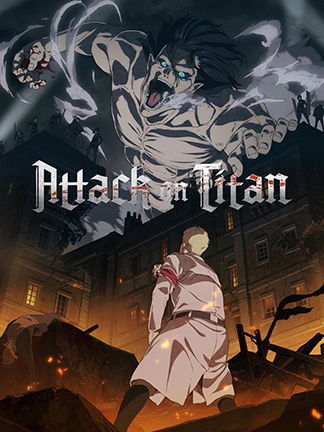
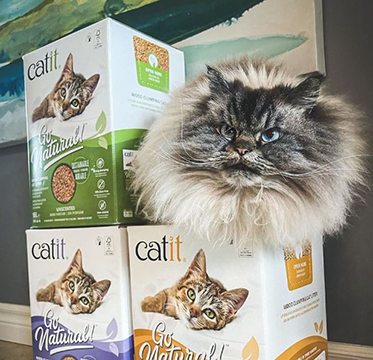

my top 5's
top five animes
- attack on titan
- magi
- deathnote
- violet evergarden
- blue spring ride

This is my top one anime because it is so entertaining and the storyline is amazing.
I watched this during the beginning of COVID-19 and it made me really happy.
five favorite dishes
- rose tteobeoki
- chicken alfredo
- tomato egg stir-fry
- korean bburinkle chicken
- pig feet with black ginger and vinegar
This dish is a little sweet and creamy. It is just so delicious.

I grew up eating this dish so it reminds me of home and my childhood.
top five pics of merlin
- merlin being merlin
- merlin is very angry
- 
- merlin sitting on catit box
- merlin as a cute little kitten
- merlin versus pizza fight